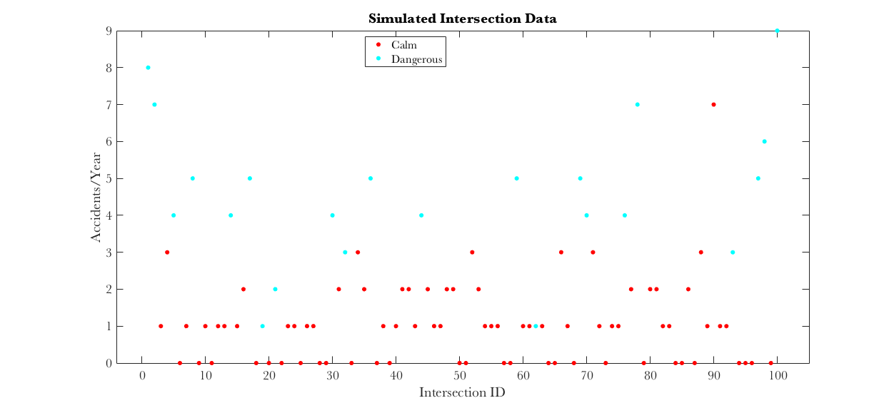
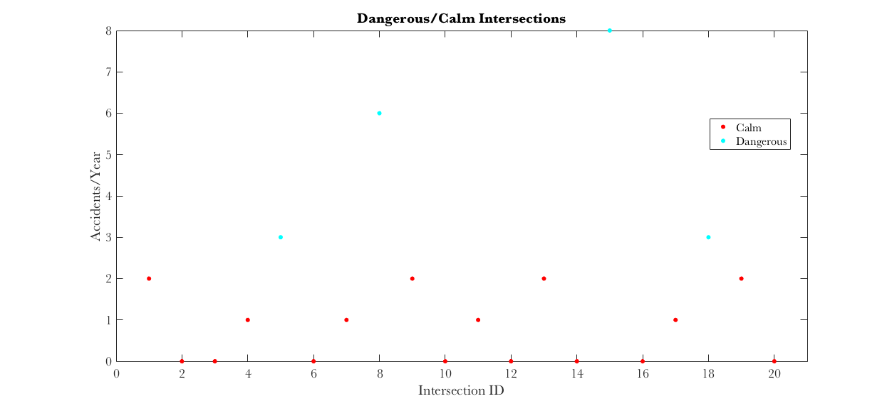

Project3_Question1.m
code to see results from Project 3, Question 1 code to run EM algorithm is attached as a MATLAB function
Contents
Generate fake data to test algorithm, based on generative model
piParam = 0.3; % for Bernoulli distribution lambdaD = 5; % lambda for dangerous intersections lambdaC = 1; % lambda for calm intersections N = 100; X = zeros(N,1); % 1000 data points Z = zeros(N,1); for ii=1:N Z(ii) = binornd(1,piParam); % latent variable if Z(ii)==1 X(ii) = poissrnd(lambdaD); % generate fake observed accident count % for dangerous intersections elseif Z(ii)==0 X(ii) = poissrnd(lambdaC); % generate fake observed accidents for calm % intersections end end figure; gscatter(1:N,X,Z);title('Simulated Intersection Data'); xlabel('Intersection ID');ylabel('Accidents/Year'); legend('Calm','Dangerous'); [piParamEst,lambdaDest,lambdaCest] = PoissBernEM(X); % compare estimated values to true values from simulation fprintf('True Pi: %3.2f Estimated Pi: %3.2f\n',piParam,piParamEst); fprintf('True Lambda-D: %3.2f Estimated Lambda-D: %3.2f\n',lambdaD,lambdaDest); fprintf('True Lambda-C: %3.2f Estimated Lambda-C: %3.2f\n\n',lambdaC,lambdaCest); % Figure out how well we do inferring dangerous versus calm intersections % Count any intersection as dangerous if alpha for that intersection is % greater than 0.5. tmp = poisspdf(X,lambdaDest)*piParamEst; tmp2 = poisspdf(X,lambdaCest)*(1-piParamEst); alpha = tmp./(tmp+tmp2); % calculate alpha estimatedIntersectionType = alpha>0.5; % create logical indicator, 1 is dangerous tmp = estimatedIntersectionType+Z; proportionCorrect = sum(tmp==2 | tmp==0)/N; fprintf('Proportion of Intersections Correctly Identified: %3.2f\n\n',proportionCorrect);
True Pi: 0.30 Estimated Pi: 0.26 True Lambda-D: 5.00 Estimated Lambda-D: 4.41 True Lambda-C: 1.00 Estimated Lambda-C: 0.93 Proportion of Intersections Correctly Identified: 0.90
Simulated Data Results
It looks like the algorithm works quite well, as it estimates the parameters of the model accurately and correctly identifies about 90% of intersections as dangerous or calm.
Test on data provided for HW, problems 1-C and 1-D
X = [2,0,0,1,3,0,1,6,2,0,1,0,2,0,8,0,1,3,2,0]; N = length(X); [piParam,lambdaD,lambdaC] = PoissBernEM(X); % print estimated values fprintf('Estimated Pi (Probability Dangerous): %3.2f\n',piParam); fprintf('Estimated Lambda-D: %3.2f\n',lambdaD); fprintf('Estimated Lambda-C: %3.2f\n',lambdaC); % Calculate probability of an intersection being dangerous given the data, % which we can find by calculating alpha. tmp = poisspdf(X,lambdaD)*piParam; tmp2 = poisspdf(X,lambdaC)*(1-piParam); alpha = tmp./(tmp+tmp2); % calculate alpha fprintf('Intersection Probability Dangerous\n'); disp([(1:N)',alpha']);
Estimated Pi (Probability Dangerous): 0.12
Estimated Lambda-D: 6.12
Estimated Lambda-C: 0.96
Intersection Probability Dangerous
1.0000 0.0323
2.0000 0.0008
3.0000 0.0008
4.0000 0.0052
5.0000 0.1755
6.0000 0.0008
7.0000 0.0052
8.0000 0.9822
9.0000 0.0323
10.0000 0.0008
11.0000 0.0052
12.0000 0.0008
13.0000 0.0323
14.0000 0.0008
15.0000 0.9996
16.0000 0.0008
17.0000 0.0052
18.0000 0.1755
19.0000 0.0323
20.0000 0.0008
Actual Data Results
So, we have an ~12% probability of an intersection being dangerous. Dangerous intersections have about 6 accidents/year, while calm intersections have about 1 accident/year.
The probability that intersection 1 is dangerous is 0.032, while the probability that intersection 5 is dangerous is 0.176.
Based on the probabilities, it would be reasonable (cautious) to tag any intersection with a probability of being dangerous greater than 0.05 as black spots. So, we would tag intersections 5, 8, 15, and 18 as potentially dangerous intersections.
dangerous = alpha>0.05; figure; gscatter(1:N,X,dangerous);title('Dangerous/Calm Intersections'); xlabel('Intersection ID');ylabel('Accidents/Year'); legend('Calm','Dangerous');
Re-run EM with initializations for lambda-D and lambda-C swapped, 1-E
X = [2,0,0,1,3,0,1,6,2,0,1,0,2,0,8,0,1,3,2,0]; N = length(X); [piParam,lambdaD,lambdaC] = PoissBernEMSwap(X); % print estimated values fprintf('Estimated Pi: %3.2f\n',piParam); fprintf('Estimated Lambda-D: %3.2f\n',lambdaD); fprintf('Estimated Lambda-C: %3.2f\n',lambdaC); % We see that swapping the initializations gives us complementary estimates. % We have now estimated, in essence, the probability that an intersection % is calm. As long as we flip our labels, these are still good inferences.
Estimated Pi: 0.88 Estimated Lambda-D: 0.96 Estimated Lambda-C: 6.12